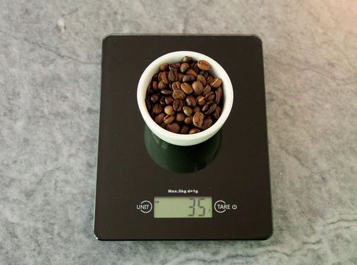

A big part of what makes coffee smell and taste so complex and delicious is the presence of aromatic compounds in roasted coffee beans. Immediately after roasting, these compounds begin to escape from the bean in a process called degassing — taking a lot of flavor with them! After 8 days, up to 70% of those compounds will be gone. As time goes on, you lose more flavor, and are left with stale tasting coffee. Grinding coffee will make this process happen faster; exposing more surface area of the bean makes it easier for the compounds to escape. Using only fresh coffee and grinding right before you brew will help ensure you get the most flavorful cup out of your beans! Consider a coffee subscription service to enjoy freshly roasted coffee delivered right to your door. In fact, all Caffe Luxxe coffees ship to you directly from our local roastery in Los Angeles!
